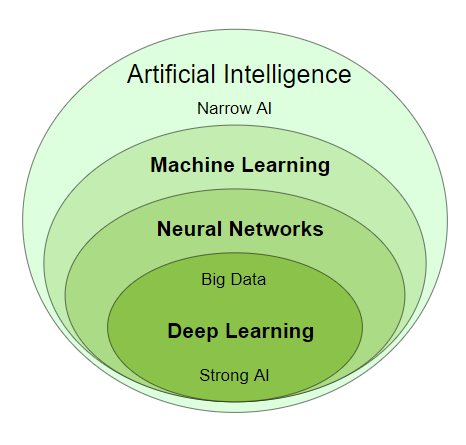

Artificial Intelligence Introduction
Artificial Intelligence
Is a Contrast to
Human Intelligence
What is Artificial Intelligence?
Artificial Intelligence suggest that machines can mimic humans in:
- Talking
- Thinking
- Learning
- Planning
- Understanding
Artificial Intelligence is also called Machine Intelligence and Computer Intelligence.
Artificial Intelligence (AI)
Artificial Intelligence is a scientific discipline embracing several Data Science fields ranging from narrow AI to strong AI, including machine learning, deep learning, big data and data mining.

Narrow AI
Narrow Artificial Intelligence is limited to narrow (specific) areas like most of the AI we have around us today:
- Email spam Filters
- Text to Speech
- Speech Recognition
- Self Driving Cars
- E-Payment
- Google Maps
- Text Autocorrect
- Automated Translation
- Chatbots
- Social Media
- Face Detection
- Visual Perception
- Search Algorithms
- Robots
- Automated Investment
- NLP - Natural Language Processing
- Flying Drones
- IBM's Dr. Watson
- Apple's Siri
- Microsoft's Cortana
- Amazon's Alexa
- Netflix's Recommendations
Narrow AI is also called Weak AI.
Weak AI: Built to simulate human intelligence.
Strong AI: Built to copy human intelligence.
Strong AI
Strong Artificial Intelligence is the type of AI that mimics human intelligence.
Strong AI indicates the ability to think, plan, learn, and communicate.
Strong AI is the theoretical next level of AI: True Intelligence.
Strong AI moves towards machines with self-awareness, consciousness, and objective thoughts.
One need not decide if a machine can "think".
One need only decide if a machine can act as intelligently as a human.
Alan Turing